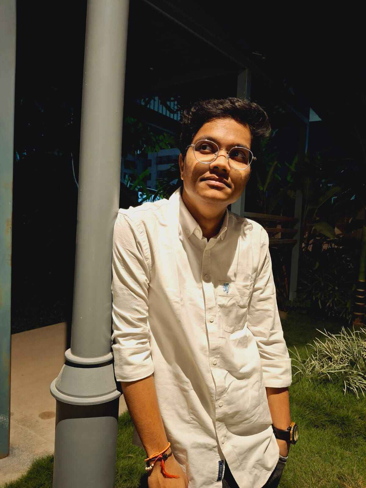

01
Intelligent systems
Turning machine intelligence into products people can actually understand, use, and trust.
systems thinkingAIproduct logic
a personal
research paper
vol. 01
issue no. 04
I build intelligent, scalable digital solutions at the intersection of engineering, systems thinking, and a little bit of curiosity.

fig. 01 / the person behind the systemsAbstract
Aditya is a technical lead and full-stack developer who likes the space where complex ideas become clear, useful products.
Currently working with Hydrilla AI, he is interested in building intelligent digital experiences that are robust under the hood and inviting on the surface. His practice moves between architecture, interface, and the small decisions that make software feel considered.
Read the full profile ↗What I work on
A small index of the problems I like to solve.
Turning machine intelligence into products people can actually understand, use, and trust.
Connecting dependable engineering with a front end that feels calm, fast, and intentional.
Learning in public, sharing useful work, and making the next person’s starting point a little better.
Method
notes from the
working process
Good systems begin with a sharp question. I look for the real constraint before I reach for the obvious solution.
Architecture should create clarity, not ceremony. I care about clean structure and a clear path from input to outcome.
Performance matters. So does tone. The best digital products respect people’s attention and invite them to stay.
Where the work is happening
Technical Lead
building intelligent & scalable digital solutionsIntern
learning by contributing, iterating, and shippingIntern
exploring the full-stack surface areaVaddeswaram
the classroom, still in sessionCorrespondence welcome